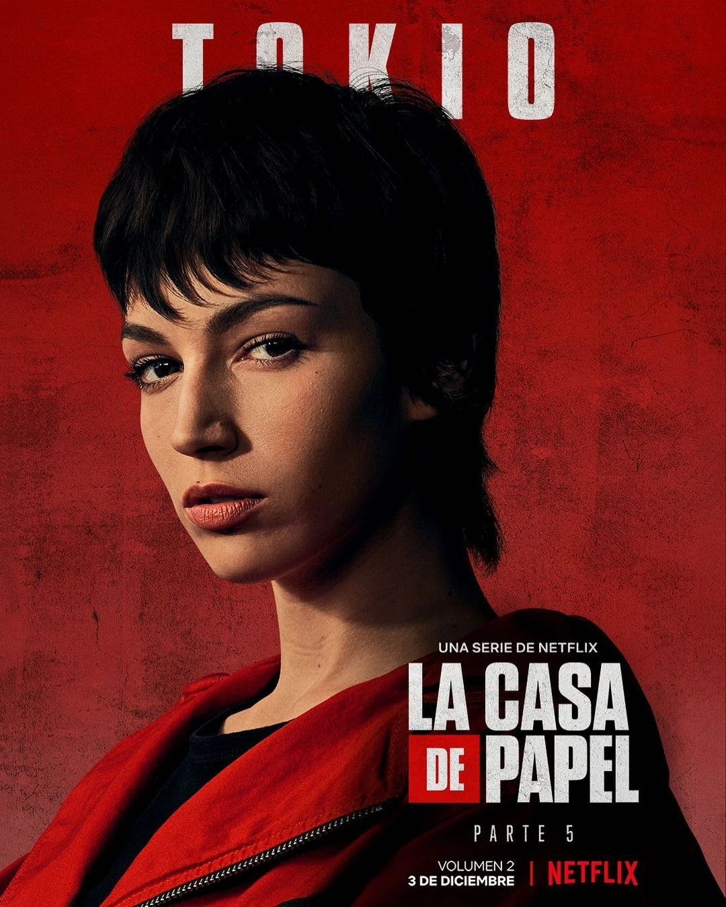

Tokio is one of the main protagonists and narrator of the Spanish Netflix series Money Heist
She is a member of the heist crew set up by the Professor to rob the Royal Mint of Spain. She is also skilled at gun-shooting and is implulsive in decison-making.

I like this character because: